Movie Recommender System
1 Project Overview
This project is a Chinese movie recommendation system that suggests movies based on genres, famous actors, endings, voting, and ratings.
The dataset consists of 90 Chinese movies from IMDb, and multiple machine learning techniques are used to analyze and predict movie popularity.
1.1 Technologies and Methods Used
1.1.1 Technologies
- Python (for data cleaning)
- Pandas (for data processing)
- Plotly (for interactive visualizations)
- R (for modeling and evaluation)
1.1.2 Methods
- Calculate similarity using Euclidean and Manhattan distances to recommend the top 5 movies based on a list of 5 watched titles.
- Classify movie groups using k-means with different feature sets and k values.
- Use KNN to predict popular movies based on selected features with train/test splits.
- Apply a Decision Tree to predict high-rating movies using selected features.
- Fit a Logistic Regression to estimate the probability of high rating.
1.2 Key Findings
For recommendations, both Euclidean and Manhattan distances work effectively.
For unsupervised methods like K-Means, groupings can be inconsistent on this small dataset.
Famous leads may influence ratings, but the sample size limits strong conclusions.
For supervised methods (KNN, Decision Tree, Logistic Regression), accuracy rates are relatively high and similar; Decision Tree achieved the best accuracy in this study.
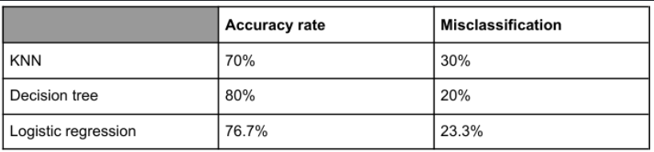
2 Movie Recommendation Methods
2.1 Based on Euclidean and Manhattan distance: 5 similar movies
Example recommendations: - Kill Me Love Me - Love Me, Love My Voice - Here We Meet Again - The Imperial Coroner - Bohe zhi xia
2.2 Best Predictive Model
- Decision Tree achieved the highest accuracy (about 80% in this run).
- High voting count was the most important factor in predicting high-rated movies.
2.3 Clustering Insights
- Movies with high voting tend to have higher ratings.
- Happy-ending movies generally receive lower ratings than sad or open-ended movies.
2.4 Dataset
2.4.1 Key Features
- Movies: 90 Chinese series (1998–2024)
- Genres: Comedy, Drama, Crime, Romance, Action, Adventure, Mystery, Fantasy
- Runtime: 40–90 minutes
- IMDb Ratings: 6.4–8.6
- Famous actors present in many titles
- Ending types: Happy, Sad, Open
- Voting data: 14–5,669 votes
2.4.2 Dataset Variables
This dataset contains information on 90 Chinese movie series (1998–2024). Below is a detailed breakdown of variables:
| # | Variable Name | Description |
|---|---|---|
| 1 | ID | Index number. |
| 2 | Title | English title. |
| 3 | Original_Title | Chinese title. |
| 4 | Runtime | Minutes per episode. |
| 5 | Ending | happy, sad, or open. |
| 6 | Ending_Happy | 1 if Ending is happy, else 0. |
| 7 | Ending_Sad | 1 if Ending is sad, else 0. |
| 8 | Ending_Open | 1 if Ending is open, else 0. |
| 9 | Genres | Main genre. |
| 10 | Genre_Comedy | One-hot for Comedy. |
| 11 | Genre_Drama | One-hot for Drama. |
| 12 | Genre_Crime | One-hot for Crime. |
| 13 | Genre_Romance | One-hot for Romance. |
| 14 | Genre_Action | One-hot for Action. |
| 15 | Genre_Adventure | One-hot for Adventure. |
| 16 | Genre_Mystery | One-hot for Mystery. |
| 17 | Genre_Fantasy | One-hot for Fantasy. |
| 18 | Male_Lead | Name of male lead. |
| 19 | Male_Famous | 1 if male lead is famous, else 0. |
| 20 | Female_Lead | Name of female lead. |
| 21 | Female_Famous | 1 if female lead is famous, else 0. |
| 22 | Main_Famous | 1 if any main lead is famous. |
| 23 | Release_Date | Date of release. |
| 24 | Is_Summer | 1 if released in Jul–Sep. |
| 25 | Year | Release year. |
| 26 | Num_Votes | Number of votes. |
| 27 | High_Voting | 1 if Num_Votes ≥ 1000. |
| 28 | IMDB_Rating | IMDb rating. |
| 29 | High_Rating | 1 if IMDb_Rating ≥ 8. |
| 30 | Viet_Title | Vietnamese title (personal reference). |
Notes:
- Ending_* are derived from Ending.
- Genre_* are one-hot encodings of Genres.
- *Famous indicators are based on a predefined list.
- High_Voting and High_Rating are binary thresholds.
3 Results and Visualizations
3.1 General Data Distribution
Treemap summary of top-rated movies:
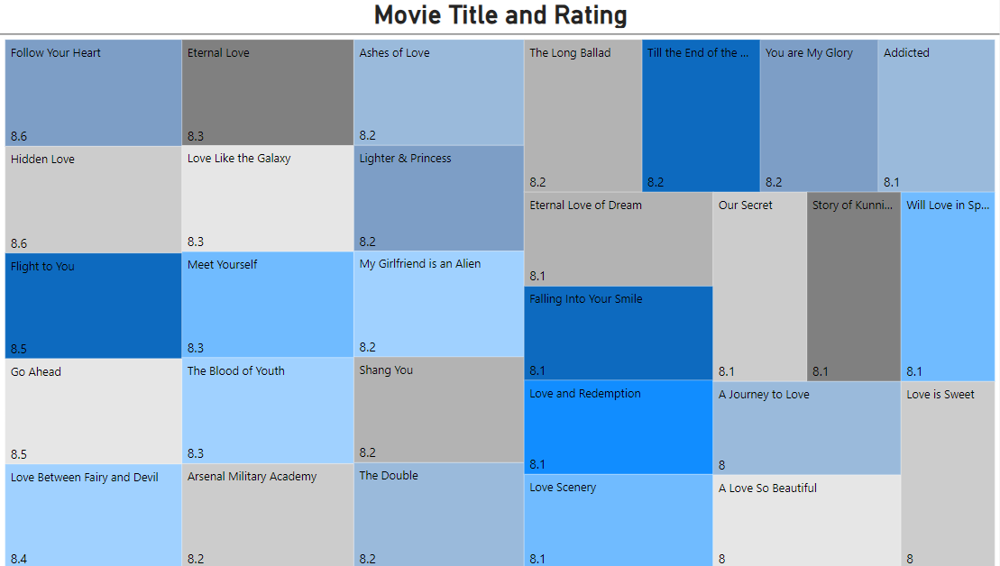
Pie chart of genre distribution (Drama is most dominant):
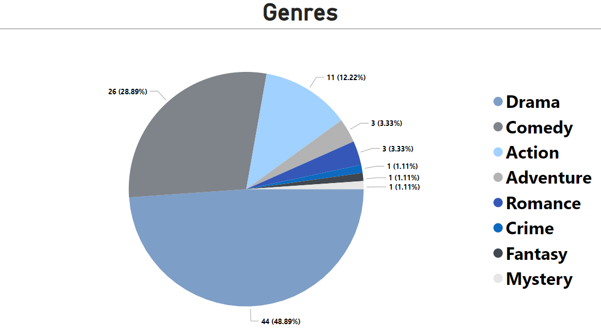
3.2 Movie Recommendation via Distance Metrics - Euclidean & Manhattan distance
Firstly, 5 titles which are ‘Yuan lai wo hen ai ni’, ‘Lost You Forever’, ‘Mischievous Kiss’, ‘Amidst a Snowstorm of Love’, and ‘My Fair Princess’ are selected randomly in R from the list of 90 movie dataset as a list of watched movies.
Secondly, distances of all movies are calculated including 5 watched movies using Euclidean and Manhattan. There are 15 features to find similarities between movies, which are ‘Title’, ‘Ending_Happy’, ‘Ending_Sad’, ‘Ending_Open’, ‘Genre_Comedy’, ‘Genre_Drama’, ‘Genre_Crime’, ‘Genre_Romance’, ‘Genre_Action’, ‘Genre_Adventure’, ‘Genre_Mystery’, ‘Genre_Fantasy’, ‘Female_Famous’, ‘Male_Famous’, ‘Main_Famous’, ‘Is_Summer’, ‘High_Voting’, and ‘High_Rating’. Except for Title, others are binary variables.
Thirdly, there are 5 sub steps to get the list of 5 movie recommendations: - Step 1: Find distances for 5 watched movies - ‘’Yuan lai wo hen ai ni’, ‘Lost You Forever’, ‘Mischievous Kiss’, ‘Amidst a Snowstorm of Love’, and ‘My Fair Princess’ to every other movies from the calculated distance matric results. - Step 2: Average the distances of 5 watched movies to every other movies - Step 3: Order the distances to find the closest movies - Step 4: Get the top 5 recommendations excluding 5 watched movies
Finally, the list of 5 movie suggestions is: - “Kill Me Love Me”
- “Love Me, Love My Voice” - “Here We Meet Again”
- “The Imperial Coroner”
- “Bohe zhi xia”
3.3 K-Means Clustering for Classification
The genre grouping uses features as Genre_Comedy, Genre_Drama, Genre_Crime, Genre_Romance, Genre_Action, Genre_Adventure, Genre_Mystery, Genre_Fantasy, and High_Rating, with k = 12. The cluster sometimes does not make sense, for example, Cluster 3 - Genre_Romance has both high and not high ratings.
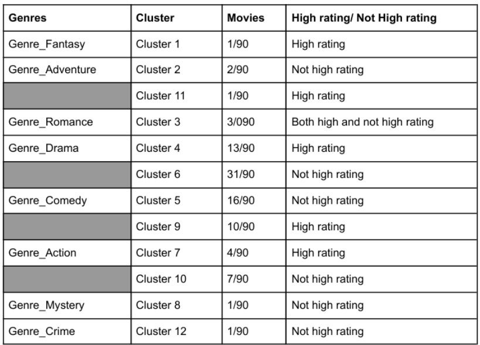
3.3.1 Group movies according to Main_Famous, High_Rating
The genre grouping uses features such as Main_Famous and High_Rating, with k = 4. Movies with famous leads tend to influence ratings more than those without. However, in this small dataset, the percentage of high-rated and not-high-rated movies is almost equal. Therefore, it is unclear whether movies with famous actors or actresses are highly rated.
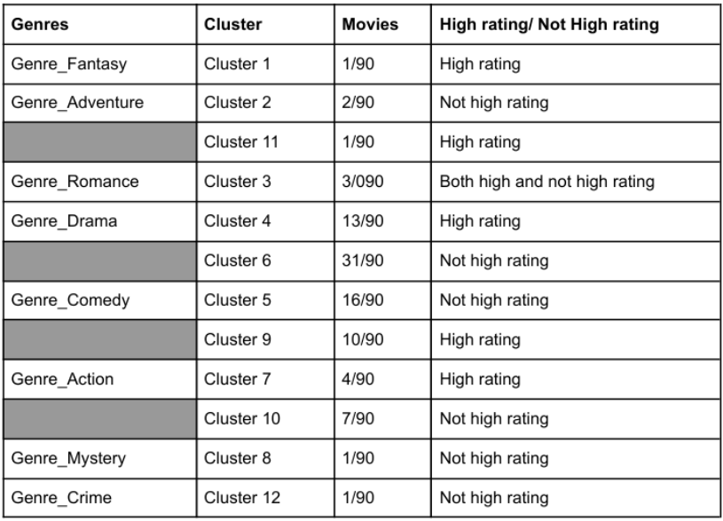
3.3.2 Group movies according to Ending, High_Rating
The genre grouping uses features such as Ending_Happy, Ending_Sad, Ending_Open, and High_Rating, with k = 6. It is evident that movies with happy endings tend to have lower ratings. However, sad and open endings show no significant difference in their high-rating percentages.
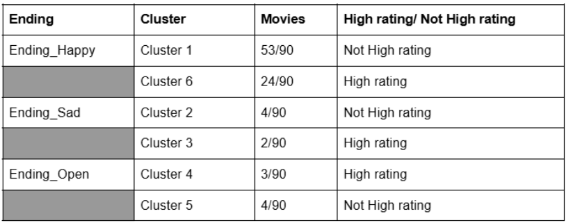
3.3.3 Group movies according to High_Voting, High_Rating*
The genre grouping uses features such as High_Voting, High_Rating, with k = 4. There is consistent evidence that movies with high voting tend to have high ratings and vice versa. However, low voting seems to impact ratings more than high voting.
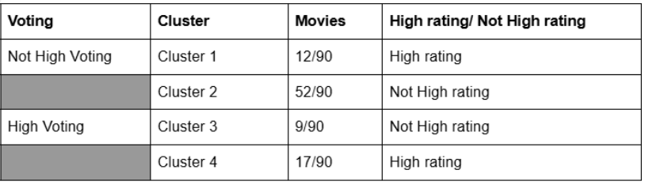
3.4 Machine Learning Models for Popularity Prediction
3.4.1 Decision Tree
This algorithm has features as Ending_Happy, Ending_Sad, Ending_Open, Main_Famous, and High_Voting to predict High_Rating. At first, the dataset is labeled as train and test dataset, which is done in KNN. Using R to run the tree model, we have the image as below:
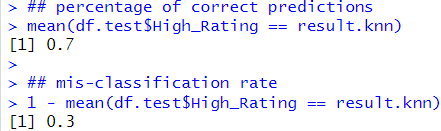
The prediction result
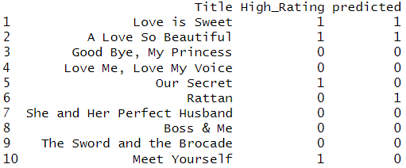
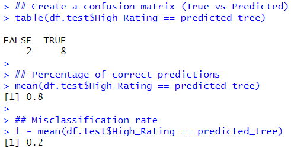
Accuracy: 80% | Misclassification: 20%
3.4.2 Logistic Regression
This algorithm has features as Ending_Happy, Ending_Open, Ending_Sad, Male_Famous, Female_Famous, and High_Voting to predict High_Rating. The model is built in R and the result is as below:
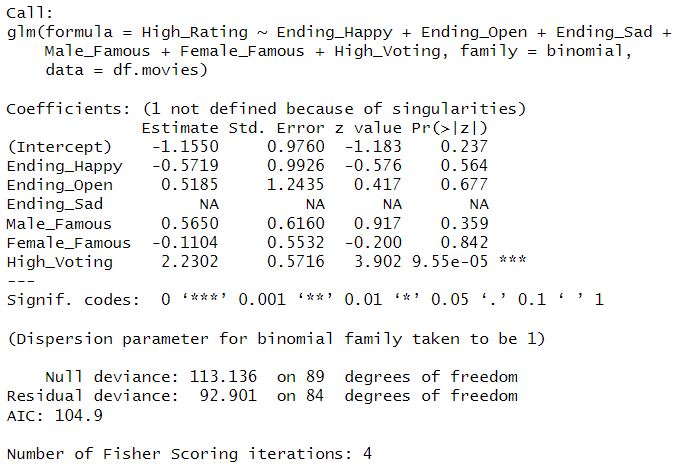
log( p̂ / (1 - p̂) ) = -1.1550 - 0.5719 × Ending_Happy + 0.5185 × Ending_Open + 0.5650 × Male_Famous - 0.1104 × Female_Famous + 2.2302 × High_Voting
3.5 Notes:
p̂ / (1 - p̂): the predicted probability of High_Rating = 1
Interpretation table
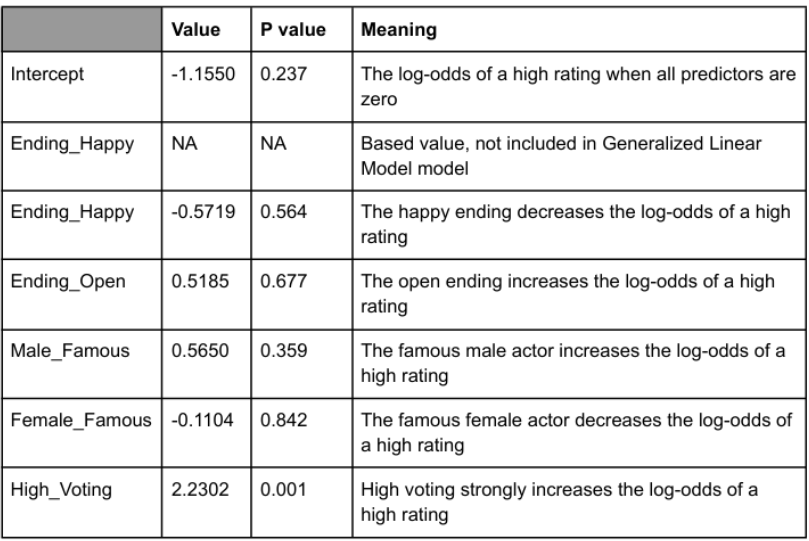
The confusion matrix
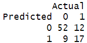
Based on the confusion matrix, the accuracy and misclassification rates are described as below:
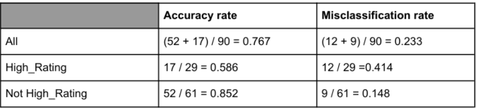
Out of 61 not High_Rating movies, there are 52 correct predictions (true negatives) and 9 misclassifications (false positives). Out of 29 High_Rating movies, there are 17 correct predictions (true positives) and 12 misclassifications (false negatives). The accuracy rate is 76.7%, and the misclassification rate is 23.3%.
Accuracy: 76.7% | Misclassification: 23.3%
4 Ethics & Privacy Considerations
- The dataset is limited to 90 movies, which may introduce biases.
- Cultural bias exists as only Chinese movies are considered.
- The “Famous Actor” category is subjective and may change over time.
- Ratings are sourced from IMDb, but additional sources could strengthen the analysis.
5 Future Improvements
- Expanding the dataset for better clustering results.
- Analyzing additional factors like critic reviews, audience comments, and streaming data.
- Exploring budget, revenue, and profit analysis to predict a movie’s success.
- Investigating seasonal movie trends and how audience preferences shift over time.